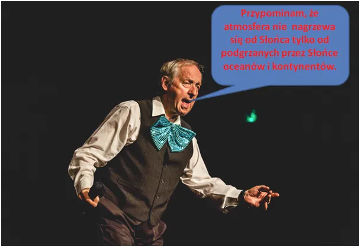
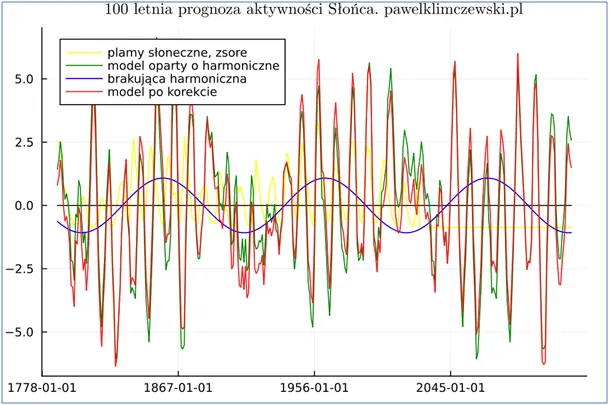
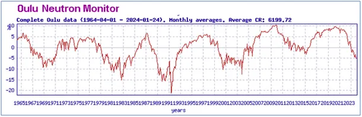

100 letnia prognoza aktywności Słońca.
Przypominam, że atmosfera nie nagrzewa się od Słońca tylko od podgrzanych przez Słońce oceanów i kontynentów.
Mamy obserwacje powierzchni Słońca od 300 lat, jednak do analizy zastosowałem tylko 237 lat wstecz z dwóch powodów:
a/ Dane najstarsze mają wiele braków danych i były prowadzone przez nieliczne ośrodki.
b/ Słońce nie zachowuje się jak dobry zegarek, jest kapryśne a częstotliwości składowe cykli, jakie łącznie dają faktyczną aktywność są płynne i to, co było prawdą 200 lat temu dziś działa na niekorzyść zgodności modelu ze stanem faktycznym.
Z drugiej strony krótszy okres analizy nie pozwala na znajdowanie długich cykli składowych zmienności naszej gwiazdy, taka jest natura zagadnienia od strony matematycznej, kto chce lepszych prognoz musi poczekać 100 lat. Z tego powodu w przeszłości astronomowie nie znajdowali długich cykli klasycznymi metodami matematycznymi. Dziś mając do dyspozycji silne komputery stosujemy tzw. "metody numeryczne", czyli sprawdzamy tryliony różnych kombinacji równań i najlepsze uznajemy za bliskie prawdy.

Na wykresie widać w skrócie proces budowania modelu aktywności Słońca na użytek przewidywania jego aktywności w przyszłości.
Przy ocenie modelu proszę się nie sugerować rozbieżnościami amplitud, szczególnie po ujemnej stronie, między żółtym słońcem i liniami modelu, ważna jest zgodność faz. Linie modelu to siły o zmiennym zwrocie, a obserwacje plam mają w minimum wartość zero a nie liczby ujemne. Dopiero zastosowana standaryzacja zscore liczby plam pozwala zestawiać oba szeregi.
Linia zielona to model oparty o składowe częstotliwości uzyskane klasyczną metodą transformacji Fouriera, oczywiście z pewną korektą na eliminację wpływu szumu, czyli przypadku. Metodami numerycznymi wyszukałem inne częstotliwości składowe z dominującym cyklem 106 letnim widocznym na wykresie. Ogłaszałem już cykle o długości 104 i 107 lat, to detaliczne rozbieżności, korekty, wynikające z badanych zakresów i innych warsztatowych zmiennych. Istotne jest to, że co sto kilka lat znany doskonale cyk 11 letni jest wzmacniany lub osłabiany.
Żółta linia to historyczna aktywność Słońca. Punkt, w którym żółta linia staje się pozioma to styczeń 2024, czyli początek prognozy, linii zielonej. I co w tej prognozie widać? Obecnie trwa 25 cykl, którego maksimum będzie latem roku 2025, a kolejne 11 letnie cykle będą słabe. Na wykresie niebieska linia wychodzi z wartości ujemnych w okolicy roku 2040, czyli do tego czasu spodziewajmy się Słońca słabszego niż w XX wieku. Zmiany aktywności słonecznej powodują nieistotne zmiany przepływu energii dla bilansu cieplnego Ziemi. Myk jest gdzie indziej, te małe zmiany na Słońcu powodują dużą odpowiedź naszej jonosfery, która tworzy osłonę przed promieniowaniem kosmicznym.

Obrazują to cykle z pomiaru protonów na drugim wykresie, mierzone od 1965 roku. Jonosfera odbudowuje się z około 5 letnim opóźnieniem w stosunku do Słońca. Cienka jonosfera wpuszcza dużo kosmicznego promieniowania, a ono jest katalizatorem powstawania chmur, które blokują dopływ energii słonecznej do Ziemi. To biała zasłona chmur reguluje dopływ energii do Ziemi, a nie przeźroczysty gaz jakim jest CO2. Biel odbija w Kosmos wszystko, co Słońce chciało nam podarować. Przypominam, że atmosfera nie nagrzewa się od Słońca tylko od podgrzanych przez Słońce oceanów i kontynentów. Temperatura powietrza jest wtórna do zgromadzonej w oceanach energii. Kontynenty stygną każdej nocy i przekazują swoje ciepło do atmosfery, a w większości w kosmos. Te podstawowe fizyczne prawdy nie są znane większości wyznawców religii klimatycznej, co stawia tych ludzi w trudnej intelektualnie sytuacji, gdy czytają te, znane mi z podstawówki, istotne właściwości gazów atmosferycznych.
Potem w procesie akumulacji ciepła w atmosferze istotny wpływ ma para wodna, znaczenie CO2 jest wielokrotnie mniejsze i mało istotne w całym procesie obiegu energii cieplnej na globie. Dziś tylko nadmienię, że w geologicznych okresach ocieplenia ilość CO2 wzrasta po ociepleniu, co oznacza, że jest skutkiem a nie przyczyną. Przewidział to już Andrzej Rosiewicz śpiewając: "Rusz się, Zenek, śnieg na dworze..."
Zgodnie z powyższym słoneczny cykl Klimczewskiego ma 106,07 roku.
Paweł Klimczewski